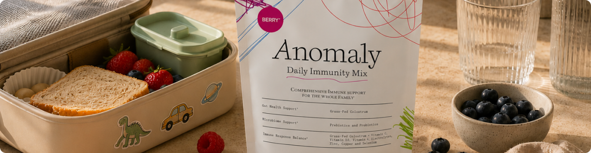
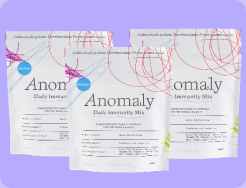
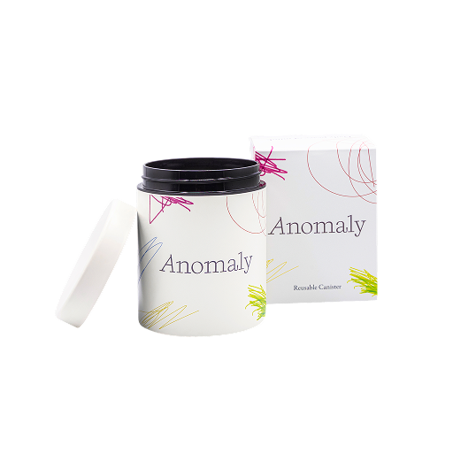
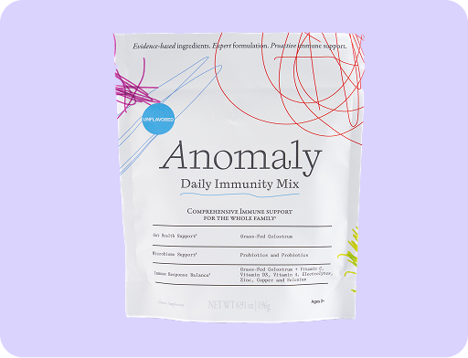
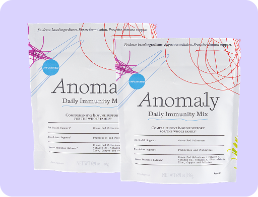

Most gut-health routines skip the foundation.
Here's what a family doctor builds first
Colostrum, probiotics, prebiotics and why a growing number of physicians say the order you support your gut in matters more than the number of supplements you take.
of customers report
Improved Digestion & Energy
It's also where the body's first barrier against the outside world sits. Support that barrier, and the systems downstream have a steadier place to begin. Digestion, immune response, energy. That order is the whole idea behind The Foundational Blend. And it starts with one ingredient most routines skip.
If you pay attention to your gut, you've probably already tried the usual lineup. A probiotic that promised balance, a greens powder, a colostrum capsule a friend swore by. And still, that quiet sense that your gut never quite feels settled.
Most supplement aisles get it backwards. They sell you more bottles. But there's a reason to start somewhere specific. With the barrier, the thin lining that decides what gets absorbed and what stays out.
"The body works as a system. The mistake most people make is treating their gut like a checklist of parts."
Here's Why Colostrum Actually Works
Colostrum is the first milk a body produces — the concentrated feed that helps protect and prepare a newborn for the world in its earliest days. It isn't a trend ingredient. It's the body's original starting point, dense with bioactive compounds that ordinary milk doesn't carry in the same amounts.
What makes it different is what's in it — and where it goes to work.

-
1
It's rich in compounds studied for the gut
Colostrum carries immunoglobulins and growth factors — the same compounds that help a newborn's system get started. Anomaly sources it from the first milking, the most bioactive window, and always calf-first.
-
2
It works at the barrier
Those compounds are studied for their role in helping maintain the integrity of the gut lining — the single-cell wall that decides what passes into the body and what stays out. A well-maintained lining is the foundation everything else depends on.
-
3
It sets the table for the microbiome
A supported lining is a better home for beneficial bacteria. That's the reason the probiotics and prebiotic fiber are taken alongside colostrum, not on their own — they land in an environment where they can take hold.
-
4
And it meets the immune system where it lives
Roughly 70% of the immune system sits in the gut. So supporting the lining and supporting everyday immune readiness aren't two separate jobs — they happen in the same place, which is why colostrum shows up in both conversations at once.
That's the case for putting colostrum first. Support the barrier, and everything taken alongside it has a steadier place to work. The microbiome, the vitamins and minerals. In The Foundational Blend, colostrum is the anchor, not a footnote.
Three Things You Need To Know About The Gut-Immune System
-
Gut barrier
Your gut lining decides what enters your bloodstream. When it's compromised, so is everything else.
-
Microbiome
Trillions of bacteria live in your gut. The balance between good and bad determines how well your immune system responds.
-
Immune cells
70% of your immune cells live in your gut. What happens there directly shapes how your body defends itself.

How Colostrum Works With Probiotics
Research suggests colostrum and probiotic strains may act synergistically. Colostrum helps support the gut environment, allowing beneficial bacteria to adhere, grow, and contribute to digestive and immune function.
Of your immune cells live in your gut.*
Of your body's immune signaling begins in the gut.*
Seven probiotic strains selected for survivability and barrier support
Selected to survive digestion and reach your gut intact.
Chosen to reinforce the gut barrier, not just populate it.
Supports both gut structure and immune response.
Seven strains. One coordinated system.
It helps support the integrity of the intestinal lining and healthy immune activity at the body's most important interface.
Real Reviews from Real Customers
-
"My pediatrician approved this for my kids. Safe for my toddler and actually effective for my gut health too. We all take it together now."
Jessica T.
-
"One scoop a day is so much easier than my old routine of 4 different bottles. The ritual is simple and the results speak for themselves."
Michael R.
-
"My whole family loves this. Kids take it without complaint, my immune health has improved, and I feel the difference in my energy."
Amanda C.
Choose your plan
-
Best Value
12 Week Plan
40% OFF Quarterly
$179$297($2.13/serving)Start 12-Week ProtocolIncludes 2 FREE Gifts
Canister Frother
Frother
-
Most Popular
Adults
30% OFF Quarterly
$69$99($2.46/serving)Start 4-Week ProtocolIncludes 2 FREE GiftsCanisterFrother
-
Family Pack
37% OFF Quarterly
$99$1581 Adults pouch (Unflavored) +
1 Kids pouch (Berry)Start Family ProtocolIncludes 3 FREE GiftsCanisterFrother
 Stick Packs
Stick Packs
- Locked-In Low Price
- Free shipping on every order
- Free Welcome Kit: $40 value
- Pause, modify, cancel anytime
- 60-day guarantee included